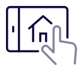

Jakou máte adresu?
Objekt N1: Thomasova 235/5
Objekt N2:
Thomasova 235/3
Základní údaje o SVJ
Naleznete na webových stránkách SVJ.
Příručka uživatele
Příručku uživatele si můžete stáhnout ve formátu PDF zde.
Další dokumenty
Stanovy společenství vlastníků si můžete stáhnout ve formátu PDF zde.
Manuál s předpisem prvků vnějšího stínění naleznete ve formátu PDF zde.
Energetický štítek PENB pro budovu N1 naleznete ve formátu PDF zde.
Energetický štítek PENB pro budovu N2 naleznete ve formátu PDF zde.

V tomto domě bude k dispozici naše Online nástěnka, která bude součástí zrcadlové plochy. Jsou zde sdruženy užitečné informace a zajímavosti, které se bezprostředně týkají života ve vašem domě a jeho okolí.
Možná však nevíte, že tyto informace můžete mít k dispozici kdykoliv, například ve svém mobilním telefonu, prostřednictvím adresy: www.svjthomasova235.cz/info
Správce nemovitosti
Prague Property Management (PPM a.s.)
Elektronický Domovní Asistent
(EDA): 775 885 885
(havarijní
servis nonstop pro vodu, kanalizaci a elektro)
E-mail: eda@ppmas.cz
Klientská zóna: www.ppmas.cz
Ostraha
První dva měsíce (do 31.5.2024) hradí ostrahu FINEP prostřednictvím společnosti
Proguard
Telefon: 602 451
484
E-mail: info@proguard.cz
Servis výtahu
KONE - servisní dispečink pro výtahy
Telefon: 800
115 115 (hlášení poruch)
V případě havárie tepla a TUV
Veolia Energie ČR, a.s.
Telefon: 800 800
860
Více informací: https://www.vecr.cz/pro-zakazniky/zakaznicka-linka
Havarijní linka dodavatele vody
PVK, a.s.
Telefon: 800 111 112
Havarijní linka dodavatele elektřiny
PRE distribuce a.s.
Telefon: 800 823 823
Servis vjezdových vrat do garáží
PH metal, s.r.o.
Telefon: 731 141
141
E-mail: info@phmetal.cz
Nejbližší Česká pošta
Hábova 1516/3
155 00 Praha 13 - Stodůlky (zobrazit na
mapě)
Otevírací doba (zobrazit pobočku):
- pondělí až čtvrtek: 8:00 -
19:00
- pátek: zavřeno
- sobota: 8:00 - 12:00
- neděle: zavřeno
Realitní služby (prodej, pronájem)
Zbořil Reality
Telefon: 605 767
235
E-mail: vladimir@zborilreality.cz
Stěhovací společnost
Stěhování Podrazil
Telefon: 272 703
301
E-mail: info@podrazil.cz
Měření online - dálkové odečty
V případě jakýchkoli dotazů týkajících se systému Měření online, využijte prosím
následující email.
E-mail: provoz@merenionline.cz
Elektromobilita: Dobíjecí stanice a zásuvky v garážích
Tento dům je díky spolupráci FINEP a Pražské energetiky připraven na umístění dobíjecí stanice či běžné zásuvky za účelem dobíjení elektrických vozidel. Tento produkt je nabízen jako balíček zahrnující instalaci a provoz včetně sledování spotřeby elektrické energie. Jak na to? K objednání můžete využít email FINEP.elektromobilita@pre.cz, další možností je vyplnit kontaktní formulář na https://www.premobilita.cz/finep/ nebo navštívit Centrum služeb PRE (Jungmannova 747/28, 110 00 Praha 1).
Reklamační technik FINEP
Jana Hejná
Telefon: 702 146
199
E-mail: jana.hejna@finep.cz
Už jste se přihlásili k odběru elektřiny?
FINEP na dodávkách elektrické energie spolupracuje se společností PRE. Postup k přihlášení odběru elektřiny je jednoduchý:
Máte zřízený internet?
Internet v našem domě zajišťují společnosti T-Mobile, UVT a
Prestonet.
Přihlásit se k jejich službám můžete zde:
https://www.t-mobile.cz/internet-na-doma
https://uvtnet.cz/internet
https://internetbritskactvrt.cz (nabídka Prestonet pro
klienty z Britské čtvrti)
Víte, že je z vás občan Prahy 13?
Postup, jak se přihlásit k trvalému pobytu na Praze 13, najdete na webu.
https://www.praha13.cz/Hlaseni-trvaleho-pobytu-uplne-informace.html
Jak nakládat s odpady při stěhování?
Chcete se poznat se svými sousedy?
Najdete je třeba tady: Facebooková skupina SVJ
Elektroměr
... najdete na svém patře.
Jističe
... máte uvnitř bytu nad vchodovými dveřmi.
Vodoměr
... je v koupelně či WC, hledejte dvířka. Výjimečně může být vodoměr umístěn i v kuchyňské lince.
Hlavní uzávěr vody
... je v garážích ve 1. podzemním patře ve vodoměrné místnosti (vchod z garáží). Vedlejší uzávěry stoupaček jsou v garážích. Za běžných okolností je zakázáno na ně sahat, v případě havárie zde prosím jen uzavřete daný přívod a neprodleně volejte havarijní linku správce nemovitosti (viz důležité kontakty).
Běžný servis výtahu
... zajišťuje správce nemovitosti. V případě poruchy volejte pohotovostní linku výrobce (viz důležité kontakty).
Interiérová výmalba
... interiéry bytů vymalováváme bílou barvou Primalex Plus.